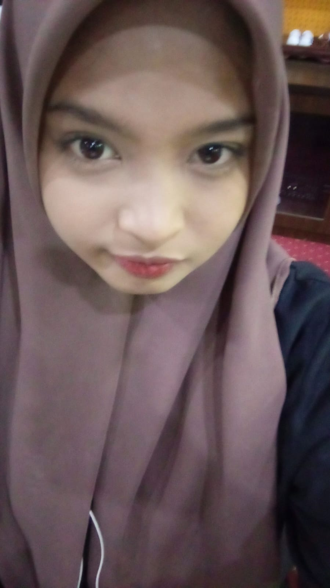

PORTOFOLIOR E S K Y
|
 |
| DATA DIRI | Nama : Resky Auliyah Kartini Askin | Pendidikan Tinggi: Universitas Hasanuddin |
|---|---|
| Tempat, Tanggal Lahir : Makassar, 21 April | Nim : H071231009 |
| Alamat: Jl. Mallombassang No.67 | Fakultas : Matematika dan Ilmu Pengetahuan Alam |
| Email: reskyauliyahka21@gmail.com | Program Studi: Sistem Informasi |
| Jenis Kelamin : Perempuan | Telepon: 0895330153087 |
Saya tidak punya lagu favorit, karena lagu saya tergantung fyp tiktok.
Ini rekomendasi lagu menurut tiktok saya:
Berikut ciri-ciri artis tersebut: